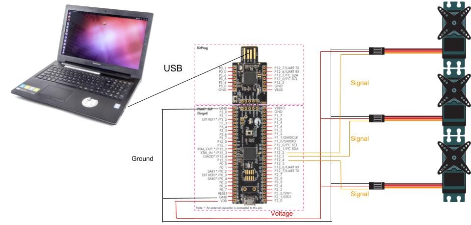

Electrical connections
Since the microcontroller (PSoC 5) is conencted to the computer through USB, both the microcontroller and servos are given 5V from the computer. However, if the servos are acting up/not working properly, and the code with working correctly, supplying the servos with 9V from a 9V battery could fix that problem.
Wiring Diagram
;